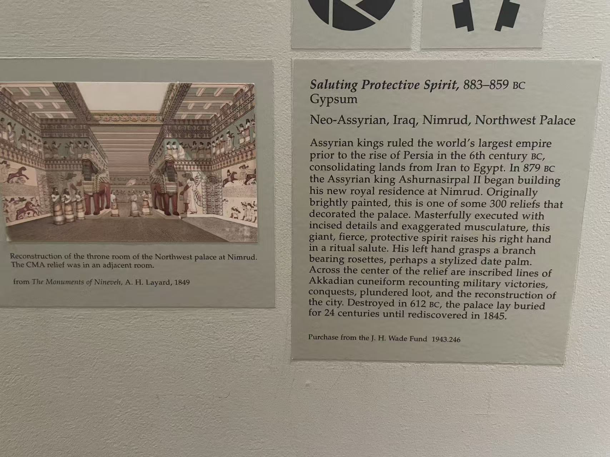

NIMRUD / NORTHWEST PALACE
尼姆鲁德的
有翼守护者
亚述西北宫浮雕 · 海外所见
鹰首、人首，举手致意或持桶面向圣树。在三家博物馆里看过的这些浮雕，都来自公元前9世纪尼姆鲁德的西北宫。把它们放在一起，手势、羽翼和文字的差别便清楚起来。
 举手致意的护佑精灵 · 克利夫兰 · 1943.246
举手致意的护佑精灵 · 克利夫兰 · 1943.246石板上的守护者
鹰首有翼守护者
Guardian Figure
- 收藏
- 休斯顿美术馆
- 馆藏号
- 80.53
- 年代
- 公元前883—859年
- 材料
- 石膏石（Gypsum）
- 尺寸
- 高107 × 宽66 × 厚3.8厘米
鹰喙向左伸出，羽翼却在身体右侧展开。举起的手握着锥形器物，另一只手提桶；树状纹样紧贴人物，胸前还露出两把刀的柄。鸟首与人的手臂、衣袍连成一体，细密的羽毛与衣缘刻线让这块仅一米多高的壁板仍有许多近看的地方。
现场展签将这种形象联系到古代贤者 apkallu，并从刀具解释其防御、护佑意味。它并不因此等同于某一位有名字的神。文字在这件石板的顶部形成窄带，与另外两件横穿身体的铭文很不一样。
馆方来源记录把它追溯到19世纪尼姆鲁德的发掘：1853年进入英国哈罗比伯爵家族收藏，此后由家族传承。1980年，休斯顿美术馆购入这件浮雕；原来所在的宫殿房间尚未见于该馆记录。
休斯顿美术馆：Guardian Figure（含来源记录） ↗
举手致意的护佑精灵 · Merton参观照片 · 点击放大现场展签 ＋

克利夫兰艺术博物馆 · 1943.246 · 现场展签 举手致意的护佑精灵
Saluting Protective Spirit
- 收藏
- 克利夫兰艺术博物馆
- 馆藏号
- 1943.246
- 年代
- 公元前883—859年
- 材料
- 石膏石（Gypsum）
- 尺寸
- 整体高229.9 × 宽137厘米
这位人首精灵抬起右手，掌心向前；左手握着植物枝条，枝端带有花形装饰。这里没有另外两件的桶与锥形器物，动作也更接近致意。腕上的玫瑰花形饰物、层层卷曲的胡须、排列整齐的羽毛，以及垂下的衣服流苏，各自有不同的刻线节奏。
密集的楔形文字横穿手臂、衣袍与羽翼，人物轮廓并没有让文字停下来。照片中的横向接缝显示壁板由数块拼合，共同构成一件馆藏浮雕。馆方书目与楔形文字数字图书馆（CDLI）的 P427317 条目，将它对应到西北宫S室的 S-06号壁板。
馆方开放档案记录了它在阿默斯特学院的旧藏经历，随后经纽约布鲁默画廊，于1943年进入克利夫兰艺术博物馆。今天单独观看的这块高逾两米的石板，原本属于宫殿中连续排列的建筑装饰。
克利夫兰馆藏打印页：作品、来源与S-06书目 ↗ · 楔形文字数字图书馆 CDLI：P427317／S-06 ↗
圣树旁的有翼精灵
Winged Genie Fertilizing a Date Tree
- 收藏
- 纳尔逊－阿特金斯艺术博物馆
- 馆藏号
- 40-17
- 年代
- 公元前884—860年
- 材料
- 石灰岩（Limestone）
- 尺寸
- 整体高231.78 × 宽180.98厘米
人首精灵戴着角冠，右手的锥形器物伸向树纹，左手提桶，胸前露出刀柄。树状纹样在人物两侧出现，卷曲胡须、羽毛与植物枝节布满石面，铭文又从身体中部横贯过去。馆方英文题名采用“为椰枣树授粉”的解释；眼前的树却是高度程式化的纹样，而非植物写生。
这件有较清楚的原位线索：馆方来源档案列出西北宫L室（Room L），所引 Meuszyński 研究的书目条目进一步标为 L-10。它与克利夫兰的 S-06 来自同一宫殿的不同房间；字母指房间，完整编号则定位到具体壁板。
19世纪，它经亨利·罗林森与在摩苏尔的传教士德怀特·惠特尼·马什，进入圣路易斯商业图书馆收藏。1940年，纳尔逊购入这块浮雕。它的流转与休斯顿那件的英国家族收藏经历不同。
纳尔逊：Winged Genie Fertilizing a Date Tree（含来源与书目） ↗ · 大都会艺术博物馆：圣树与护佑形象 ↗
SIDE BY SIDE
三件并看
休斯顿这件高约1.07米，另外两件高约2.3米。照片并排展示，不代表实物等比例。
鹰首与人首
休斯顿的长喙和颈部羽毛，替代了另外两件的面部与卷曲胡须。纳尔逊人物头顶的角冠又与克利夫兰的头饰有别；相似的有翼人身，并没有抹平头部差异。
手势与所持物
休斯顿和纳尔逊都举起锥形器物、下垂持桶。克利夫兰则举起空着的右手，左手持枝条。并看时，先辨认手指与物件，再看它们指向树纹还是前方的空间。
石面上的羽翼、衣饰与文字
羽毛的层列、胡须的卷曲和衣缘的流苏形成不同密度的刻线。休斯顿的文字在顶部；克利夫兰与纳尔逊的文字带横穿人物身体，图像与书写叠在一起。